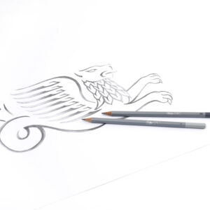

Lise Højer, der er founder af Kreativt Fitnesscenter, er billedkunstner med mange års erfaring i at undervise.
Hun har bygget konceptet op omkring erfaringen med, at du som kursist deltager på et ofte rimelig dyrt weekendkursus,
for bagefter at være ladt til dig selv med træningen af de ting du har lært.
Hos os kan du blive medlem og spare masser af penge på weekendkurser og efterfølgende træne dine nye tekniker
i selskab med andre og ikke mindst har vi altid en kunstner til din rådighed som kan hjælpe dig
Vi tilbyder tegne og maleundervisning når det passer dig. Vi har skabt et fællesskab, hvor undervisningerne kan ske stort set hele tiden, og du sammensætter selv,
hvordan du gerne vil have dit forløb til at se ud. Vi guider dig selvfølgelig gerne hele vejen
Fællesskabet har åbent alle hverdage kl 10-22 samt weekender kl 10-18 og i hele tidsrummet har vi en kunstner på gulvet som du kan sparre med.
For os er det vigtigste at skabe et socialt fællesskab for kunstneriske personer, der mangler et sted at sparre med andre, der har den samme interesse. Hvis du er nybegynder inden for faget og endnu ikke har udforsket denne side af dig selv, så sørger vi for at hjælpe dig i gang. På et tegnekursus hos os vil du være omgivet af kompetente mennesker, der guider dig til at finde din egen tegnestil. Vi har mange års erfaring i undervisning og ved derfor, hvordan vi skal koge vores viden ned, så du hurtigt lærer at tegne. Derefter sørger vi for at vedligeholde din motivation, da du med et medlemskab kan komme ned til os og fortsætte med at øve dig sammen med andre.
Vil du gerne lære at tegne, så tilmeld dig et tegnekursus hos Kreativt Fitnesscenter nu. Det kan du gøre via vores onlinesystem eller ved at ringe til os. Vi tilbyder desuden et gratis introforløb, så du er klædt ordentligt på, når du starter på det endelige tegnekursus. På den måde føler du dig tryg og har fået den nødvendige viden, du skal bruge for at fortsætte på de øvrige kurser. Vi sørger desuden for at guide dig i forhold til valg og køb af materialer. Du kan købe alt, hvad du skal bruge hos os. Kontakt os nu og bliv tilmeldt et kursus, så din indre tegner kan komme til udtryk.
Alle vores kurser kan du tilmelde dig uanset om du er medlem eller ej. Det er kurser helt som du kender dem andre steder fra.
Alt materiale her er udviklet så du kan sidde hjemme og lære teknik til at tegne
Det eneste du behøver er adgang til internettet og lidt materialer,
så kan vi komme igang. Vi har lavet forslag klar til dig længere nede af siden, hvis du mangler materialer til at komme igang.
Klik på knappen for at læse mere
Alle kan komme og benytte vores staffelipladser eller vores tegnestudie på et endagsbesøg Du bestemmer selv hvornår
Klik på knappen for at læse mere
Vi anbefaler alle vores nye medlemmer at hoppe på vores gratis introforløb. Det gør vi for at du kan
føle dig tryg i huset og få en helt basal indsigt i det materiale du drømmer om at arbejde med
Introforløb er gratis for alle også ikke-medlemmer
Brug evt. introforløbene til at snuse lidt til mulighederne i huset før du melder dig ind.
Når du har været på introforløb er du klar til at hoppe ind i og gøre brug af ‘kunstner på gulvet’ og hele vores store fællesskab om det kreative.
Lise Højer, der er founder af Kreativt Fitnesscenter, er billedkunstner med mange års erfaring i at undervise.
Hun har bygget konceptet op omkring erfaringen med, at du som kursist deltager på et ofte rimelig dyrt weekendkursus,
for bagefter at være ladt til dig selv med træningen af de ting du har lært.
Hos os kan du blive medlem og spare masser af penge på weekendkurser og efterfølgende træne dine nye
tekniker i selskab med andre og ikke mindst har vi altid en kunstner til din rådighed som kan hjælpe dig
Hos Kreativt Fitness i Køge har du muligheden for at lære at male. Vi tilbyder nemlig malekursus til alle niveauer.
Du kan komme som nybegynder, eller du kan være øvet og måske søge lidt mere udfordring eller sparring med andre.
Uanset hvad sørger vi for, at du går herfra med mere viden om teknikker, som du kan prøve derhjemme.
Derved hjælper vi dig med at finde dig selv som kunstmaler.
Efter endt kursus kan du blive medlem hos os, hvilket blandt andet indebærer,
at du kan komme og vedligeholde dine maleevner hos os, så du fortsat kan stille spørgsmål og sparre med andre. På vores
malekursus er det hovedsageligt den figurative malestil, der kommer til udtryk. Det abstrakte inddrages dog også, så du får viden omkring begge.
For os er det vigtigste at skabe et socialt fællesskab for kunstneriske personer, der mangler et sted at sparre med andre, der har den samme interesse. Hvis du er nybegynder inden for faget og endnu ikke har udforsket denne side af dig selv, så sørger vi for at hjælpe dig i gang. På et tegnekursus hos os vil du være omgivet af kompetente mennesker, der guider dig til at finde din egen tegnestil. Vi har mange års erfaring i undervisning og ved derfor, hvordan vi skal koge vores viden ned, så du hurtigt lærer at tegne. Derefter sørger vi for at vedligeholde din motivation, da du med et medlemskab kan komme ned til os og fortsætte med at øve dig sammen med andre.
Hos Kreativt Fitnesscenter har vi fokus på det sociale og følelsen af at være en del af et større fællesskab.
Vi guider dig og hjælper dig med at tillære en masse viden omkring faget og din egen teknik, men vi sætter også nogle
hyggelige og rolige rammer, mens du gør dette. Kunsten at male skal ifølge os være en afstressende aktivitet,
der giver en pause fra hverdagen.
Fleksibilitet er en stor del af vores koncept, da det er dig, der står i centrum
for vores malekursus. Derfor har du både mulighed for at deltage i et weekendkursus hos os, eller du kan tilmelde dig
et onlinekursus, hvilket gør det muligt for dig at forbedre din maleteknik, når du har tid. På et malekursus hos os lærer
du desuden om de nødvendige materialer, som du kan købe i vores butik.
Når du deltager i et malekursus hos os, lærer du ikke blot at forbedre dine maleevner.
Du bliver en del af et fællesskab, der samles omkring det kunstneriske ved at skabe et motiv på
et lærred, uanset malestilen. Lær at male og skab samtidig et sammenhold med andre ligesindede.
Det at male sammen med andre bidrager til, at du bevarer din motivation og vedligeholder glæden
ved at få en pause fra hverdagen.
Tilmeld dig et malekursus nu via vores onlinesystem eller ved at ringe til os.
Lær at male ONLINE
Du kan lære det hjemmefra eller på din ferie, det eneste du behøver er adgang til internettet.
For bare kr 89,- om måneden får du adgang til:
- Masser af tegne tips og tricks
- Online malekursus i pouring teknikker og flere kommer løbende
- Forum hvor du kan skrive med andre maleglade mennesker
- Online sparring med Lise Højer og andre undervisere fra Kreativt Fitnesscenter
- Rabat på materialer fra vores webshop
- Rabat på vores fysiske undervisning
Vi gør alt hvad vi finder muligt for at skabe et miljø med masser af maleglæde og god stemning så kig med
Klik på knappen for at læse mere
Alle kan komme og benytte vores staffelipladser eller vores tegnestudie på et endagsbesøg.
Du bestemmer selv hvornår
Når du booker skriv da gerne i kommentarfeltet hvilken dag du har lyst til at komme
Klik på knappen for at læse mere
Vi anbefaler alle vores nye medlemmer at hoppe på vores gratis introforløb. Det gør vi for at du kan
føle dig tryg i huset og få en helt basal indsigt i det materiale du drømmer om at arbejde med
Introforløb er gratis for alle også ikke-medlemmer
Brug evt. introforløbene til at snuse lidt til mulighederne i huset før du melder dig ind.
Når du har været på introforløb er du klar til at hoppe ind i og gøre brug af ‘kunstner på gulvet’ og hele vores store fællesskab om det kreative.